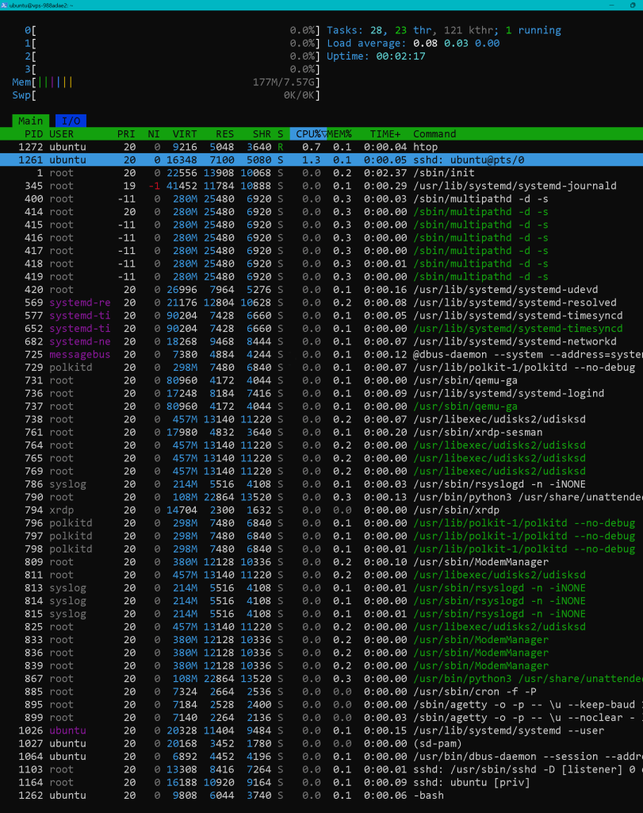

🚀 How to Install and Enable xRDP on Ubuntu for Remote Desktop Access 🖥️
Are you looking to access your Ubuntu machine remotely? Whether you're managing a server or just want to control your desktop from another location, xRDP is a fantastic tool that allows you to connect to your Ubuntu system using a Remote Desktop Protocol (RDP) client. In this blog post, I'll walk you through the simple steps to install and enable xRDP on your Ubuntu machine. Let's dive in! 🏊♂️
📝 Step-by-Step Guide to Install and Enable xRDP
1️⃣ Update Your System
Before installing any new software, it's always a good idea to update your system to ensure you have the latest packages and security patches. Run the following command in your terminal:
sudo apt update
ubuntu@vps-988adae2:~$ sudo apt update
Get:1 http://security.ubuntu.com/ubuntu oracular-security InRelease [126 kB]
Get:2 http://nova.clouds.archive.ubuntu.com/ubuntu oracular InRelease [265 kB]
Get:3 http://nova.clouds.archive.ubuntu.com/ubuntu oracular-updates InRelease [126 kB]
Get:4 http://nova.clouds.archive.ubuntu.com/ubuntu oracular-backports InRelease [126 kB]
Get:5 http://security.ubuntu.com/ubuntu oracular-security/main amd64 Packages [174 kB]
Get:6 http://security.ubuntu.com/ubuntu oracular-security/main Translation-en [47.2 kB]
Get:7 http://security.ubuntu.com/ubuntu oracular-security/main amd64 Components [9048 B]
Get:8 http://security.ubuntu.com/ubuntu oracular-security/universe amd64 Packages [116 kB]
Get:9 http://security.ubuntu.com/ubuntu oracular-security/universe Translation-en [35.1 kB]
Get:10 http://security.ubuntu.com/ubuntu oracular-security/universe amd64 Components [5180 B]
Get:11 http://security.ubuntu.com/ubuntu oracular-security/restricted amd64 Packages [86.7 kB]
Get:12 http://security.ubuntu.com/ubuntu oracular-security/restricted Translation-en [20.3 kB]
Get:13 http://security.ubuntu.com/ubuntu oracular-security/restricted amd64 Components [212 B]
Get:14 http://security.ubuntu.com/ubuntu oracular-security/multiverse amd64 Packages [8708 B]
Get:15 http://security.ubuntu.com/ubuntu oracular-security/multiverse Translation-en [2552 B]
Get:16 http://security.ubuntu.com/ubuntu oracular-security/multiverse amd64 Components [212 B]
Get:17 http://nova.clouds.archive.ubuntu.com/ubuntu oracular-updates/main amd64 Packages [256 kB]
Get:18 http://nova.clouds.archive.ubuntu.com/ubuntu oracular-updates/main Translation-en [71.7 kB]
Get:19 http://nova.clouds.archive.ubuntu.com/ubuntu oracular-updates/main amd64 Components [35.3 kB]
Get:20 http://nova.clouds.archive.ubuntu.com/ubuntu oracular-updates/universe amd64 Packages [159 kB]
Get:21 http://nova.clouds.archive.ubuntu.com/ubuntu oracular-updates/universe Translation-en [49.8 kB]
Get:22 http://nova.clouds.archive.ubuntu.com/ubuntu oracular-updates/universe amd64 Components [53.2 kB]
Get:23 http://nova.clouds.archive.ubuntu.com/ubuntu oracular-updates/restricted amd64 Packages [91.3 kB]
Get:24 http://nova.clouds.archive.ubuntu.com/ubuntu oracular-updates/restricted Translation-en [20.6 kB]
Get:25 http://nova.clouds.archive.ubuntu.com/ubuntu oracular-updates/restricted amd64 Components [216 B]
Get:26 http://nova.clouds.archive.ubuntu.com/ubuntu oracular-updates/multiverse amd64 Components [212 B]
Get:27 http://nova.clouds.archive.ubuntu.com/ubuntu oracular-backports/main amd64 Components [212 B]
Get:28 http://nova.clouds.archive.ubuntu.com/ubuntu oracular-backports/universe amd64 Packages [4912 B]
Get:29 http://nova.clouds.archive.ubuntu.com/ubuntu oracular-backports/universe amd64 Components [9696 B]
Get:30 http://nova.clouds.archive.ubuntu.com/ubuntu oracular-backports/restricted amd64 Components [216 B]
Get:31 http://nova.clouds.archive.ubuntu.com/ubuntu oracular-backports/multiverse amd64 Components [216 B]
Fetched 1901 kB in 1s (3394 kB/s)
51 packages can be upgraded. Run 'apt list --upgradable' to see them.
ubuntu@vps-988adae2:~$
2️⃣ Install xRDP
Once your system is updated, you can install xRDP with the following command:
sudo apt install xrdp -y
Windows PowerShell
Copyright (C) Microsoft Corporation. All rights reserved.
Install the latest PowerShell for new features and improvements! https://aka.ms/PSWindows
PS C:\Windows\system32> ssh ubuntu@54.38.79.205
The authenticity of host '54.38.79.205 (54.38.79.205)' can't be established.
ED25519 key fingerprint is SHA256:C5PmW4QPVj/F5frempeze4uhIRfr2ensmqIRcJUeCAU.
This key is not known by any other names.
Are you sure you want to continue connecting (yes/no/[fingerprint])? yes
Warning: Permanently added '54.38.79.205' (ED25519) to the list of known hosts.
ubuntu@54.38.79.205's password:
You are required to change your password immediately (administrator enforced).
You are required to change your password immediately (administrator enforced).
Welcome to Ubuntu 24.10 (GNU/Linux 6.11.0-12-generic x86_64)
* Documentation: https://help.ubuntu.com
* Management: https://landscape.canonical.com
* Support: https://ubuntu.com/pro
System information as of Thu Jan 30 10:58:36 UTC 2025
System load: 0.0 Processes: 135
Usage of /: 1.2% of 154.05GB Users logged in: 0
Memory usage: 2% IPv4 address for ens3: 54.38.79.205
Swap usage: 0%
10 updates can be applied immediately.
10 of these updates are standard security updates.
To see these additional updates run: apt list --upgradable
The list of available updates is more than a week old.
To check for new updates run: sudo apt update
WARNING: Your password has expired.
You must change your password now and login again!
Changing password for ubuntu.
Current password:
New password:
Retype new password:
passwd: password updated successfully
Connection to 54.38.79.205 closed.
PS C:\Windows\system32> ssh ubuntu@54.38.79.205
ubuntu@54.38.79.205's password:
Welcome to Ubuntu 24.10 (GNU/Linux 6.11.0-12-generic x86_64)
* Documentation: https://help.ubuntu.com
* Management: https://landscape.canonical.com
* Support: https://ubuntu.com/pro
System information as of Thu Jan 30 11:01:24 UTC 2025
System load: 0.01 Processes: 146
Usage of /: 1.2% of 154.05GB Users logged in: 0
Memory usage: 4% IPv4 address for ens3: 54.38.79.205
Swap usage: 0%
10 updates can be applied immediately.
10 of these updates are standard security updates.
To see these additional updates run: apt list --upgradable
The list of available updates is more than a week old.
To check for new updates run: sudo apt update
Last login: Thu Jan 30 10:58:37 2025 from 92.40.184.78
ubuntu@vps-988adae2:~$ sudo apt update
Get:1 http://security.ubuntu.com/ubuntu oracular-security InRelease [126 kB]
Get:2 http://nova.clouds.archive.ubuntu.com/ubuntu oracular InRelease [265 kB]
Get:3 http://nova.clouds.archive.ubuntu.com/ubuntu oracular-updates InRelease [126 kB]
Get:4 http://nova.clouds.archive.ubuntu.com/ubuntu oracular-backports InRelease [126 kB]
Get:5 http://security.ubuntu.com/ubuntu oracular-security/main amd64 Packages [174 kB]
Get:6 http://security.ubuntu.com/ubuntu oracular-security/main Translation-en [47.2 kB]
Get:7 http://security.ubuntu.com/ubuntu oracular-security/main amd64 Components [9048 B]
Get:8 http://security.ubuntu.com/ubuntu oracular-security/universe amd64 Packages [116 kB]
Get:9 http://security.ubuntu.com/ubuntu oracular-security/universe Translation-en [35.1 kB]
Get:10 http://security.ubuntu.com/ubuntu oracular-security/universe amd64 Components [5180 B]
Get:11 http://security.ubuntu.com/ubuntu oracular-security/restricted amd64 Packages [86.7 kB]
Get:12 http://security.ubuntu.com/ubuntu oracular-security/restricted Translation-en [20.3 kB]
Get:13 http://security.ubuntu.com/ubuntu oracular-security/restricted amd64 Components [212 B]
Get:14 http://security.ubuntu.com/ubuntu oracular-security/multiverse amd64 Packages [8708 B]
Get:15 http://security.ubuntu.com/ubuntu oracular-security/multiverse Translation-en [2552 B]
Get:16 http://security.ubuntu.com/ubuntu oracular-security/multiverse amd64 Components [212 B]
Get:17 http://nova.clouds.archive.ubuntu.com/ubuntu oracular-updates/main amd64 Packages [256 kB]
Get:18 http://nova.clouds.archive.ubuntu.com/ubuntu oracular-updates/main Translation-en [71.7 kB]
Get:19 http://nova.clouds.archive.ubuntu.com/ubuntu oracular-updates/main amd64 Components [35.3 kB]
Get:20 http://nova.clouds.archive.ubuntu.com/ubuntu oracular-updates/universe amd64 Packages [159 kB]
Get:21 http://nova.clouds.archive.ubuntu.com/ubuntu oracular-updates/universe Translation-en [49.8 kB]
Get:22 http://nova.clouds.archive.ubuntu.com/ubuntu oracular-updates/universe amd64 Components [53.2 kB]
Get:23 http://nova.clouds.archive.ubuntu.com/ubuntu oracular-updates/restricted amd64 Packages [91.3 kB]
Get:24 http://nova.clouds.archive.ubuntu.com/ubuntu oracular-updates/restricted Translation-en [20.6 kB]
Get:25 http://nova.clouds.archive.ubuntu.com/ubuntu oracular-updates/restricted amd64 Components [216 B]
Get:26 http://nova.clouds.archive.ubuntu.com/ubuntu oracular-updates/multiverse amd64 Components [212 B]
Get:27 http://nova.clouds.archive.ubuntu.com/ubuntu oracular-backports/main amd64 Components [212 B]
Get:28 http://nova.clouds.archive.ubuntu.com/ubuntu oracular-backports/universe amd64 Packages [4912 B]
Get:29 http://nova.clouds.archive.ubuntu.com/ubuntu oracular-backports/universe amd64 Components [9696 B]
Get:30 http://nova.clouds.archive.ubuntu.com/ubuntu oracular-backports/restricted amd64 Components [216 B]
Get:31 http://nova.clouds.archive.ubuntu.com/ubuntu oracular-backports/multiverse amd64 Components [216 B]
Fetched 1901 kB in 1s (3394 kB/s)
51 packages can be upgraded. Run 'apt list --upgradable' to see them.
ubuntu@vps-988adae2:~$ sudo apt install xrdp -y
Installing:
xrdp
Installing dependencies:
alsa-topology-conf libpipewire-0.3-common libxv1
alsa-ucm-conf libpipewire-0.3-modules-xrdp libxvmc1
cpp libpixman-1-0 libxxf86dga1
cpp-14 libsm6 libxxf86vm1
cpp-14-x86-64-linux-gnu libspa-0.2-modules luit
cpp-x86-64-linux-gnu libvulkan1 mesa-libgallium
fontconfig-config libwayland-client0 mesa-vulkan-drivers
fonts-dejavu-core libwayland-server0 pipewire-module-xrdp
fonts-dejavu-mono libwebrtc-audio-processing-1-3 ssl-cert
libabsl20230802 libx11-xcb1 x11-apps
libasound2-data libxatracker2 x11-common
libasound2t64 libxaw7 x11-session-utils
libdrm-amdgpu1 libxcb-damage0 x11-utils
libdrm-intel1 libxcb-dri2-0 x11-xkb-utils
libdrm-nouveau2 libxcb-dri3-0 x11-xserver-utils
libdrm-radeon1 libxcb-glx0 xbitmaps
libegl-mesa0 libxcb-present0 xcvt
libegl1 libxcb-randr0 xfonts-base
libepoxy0 libxcb-shape0 xfonts-encodings
libfontconfig1 libxcb-shm0 xfonts-scalable
libfontenc1 libxcb-sync1 xfonts-utils
libfuse2t64 libxcb-util1 xinit
libgbm1 libxcb-xfixes0 xinput
libgl1 libxcomposite1 xorg
libgl1-amber-dri libxcursor1 xorg-docs-core
libgl1-mesa-dri libxcvt0 xorgxrdp
libglapi-mesa libxdamage1 xserver-common
libglu1-mesa libxfixes3 xserver-xorg
libglvnd0 libxfont2 xserver-xorg-core
libglx-mesa0 libxft2 xserver-xorg-legacy
libglx0 libxi6 xserver-xorg-video-all
libice6 libxinerama1 xserver-xorg-video-amdgpu
libisl23 libxkbfile1 xserver-xorg-video-ati
libjpeg-turbo8 libxmu6 xserver-xorg-video-fbdev
libjpeg8 libxpm4 xserver-xorg-video-intel
libllvm19 libxrandr2 xserver-xorg-video-nouveau
libmpc3 libxrender1 xserver-xorg-video-qxl
libopengl0 libxshmfence1 xserver-xorg-video-radeon
libopus0 libxss1 xserver-xorg-video-vesa
libpciaccess0 libxt6t64 xserver-xorg-video-vmware
libpipewire-0.3-0t64 libxtst6 xterm
Suggested packages:
cpp-doc opus-tools cairo-5c guacamole xserver-xorg-video-mach64
gcc-14-locales pipewire xorg-docs xfonts-100dpi firmware-misc-nonfree
cpp-14-doc pipewire-bin xfonts-100dpi | xfonts-75dpi xfonts-cyrillic
alsa-utils mesa-utils xfonts-75dpi firmware-amd-graphics
libasound2-plugins nickle x11-xfs-utils xserver-xorg-video-r128
Summary:
Upgrading: 0, Installing: 124, Removing: 0, Not Upgrading: 51
Download size: 95.2 MB
Space needed: 372 MB / 163 GB available
Get:1 http://nova.clouds.archive.ubuntu.com/ubuntu oracular/main amd64 ssl-cert all 1.1.2ubuntu2 [18.0 kB]
Get:2 http://nova.clouds.archive.ubuntu.com/ubuntu oracular/universe amd64 libfuse2t64 amd64 2.9.9-9 [90.5 kB]
Get:3 http://nova.clouds.archive.ubuntu.com/ubuntu oracular/main amd64 libjpeg-turbo8 amd64 2.1.5-2ubuntu2 [150 kB]
Get:4 http://nova.clouds.archive.ubuntu.com/ubuntu oracular/main amd64 libjpeg8 amd64 8c-2ubuntu11 [2148 B]
Get:5 http://nova.clouds.archive.ubuntu.com/ubuntu oracular/main amd64 libopus0 amd64 1.5.2-2 [2913 kB]
Get:6 http://nova.clouds.archive.ubuntu.com/ubuntu oracular/main amd64 libxfixes3 amd64 1:6.0.0-2build1 [10.8 kB]
Get:7 http://nova.clouds.archive.ubuntu.com/ubuntu oracular/main amd64 libxrender1 amd64 1:0.9.10-1.1build1 [19.0 kB]
Get:8 http://nova.clouds.archive.ubuntu.com/ubuntu oracular/main amd64 libxrandr2 amd64 2:1.5.4-1 [19.6 kB]
Get:9 http://nova.clouds.archive.ubuntu.com/ubuntu oracular/universe amd64 xrdp amd64 0.9.24-5 [536 kB]
Get:10 http://nova.clouds.archive.ubuntu.com/ubuntu oracular/main amd64 alsa-topology-conf all 1.2.5.1-3 [15.5 kB]
Get:11 http://nova.clouds.archive.ubuntu.com/ubuntu oracular/main amd64 libasound2-data all 1.2.12-1 [21.0 kB]
Get:12 http://nova.clouds.archive.ubuntu.com/ubuntu oracular/main amd64 libasound2t64 amd64 1.2.12-1 [394 kB]
Get:13 http://nova.clouds.archive.ubuntu.com/ubuntu oracular-updates/main amd64 alsa-ucm-conf all 1.2.10-1ubuntu6.3 [64.8 kB]
Get:14 http://nova.clouds.archive.ubuntu.com/ubuntu oracular/main amd64 libisl23 amd64 0.27-1 [685 kB]
Get:15 http://nova.clouds.archive.ubuntu.com/ubuntu oracular/main amd64 libmpc3 amd64 1.3.1-1build2 [55.3 kB]
Get:16 http://nova.clouds.archive.ubuntu.com/ubuntu oracular/main amd64 cpp-14-x86-64-linux-gnu amd64 14.2.0-4ubuntu2 [11.9 MB]
Get:17 http://nova.clouds.archive.ubuntu.com/ubuntu oracular/main amd64 cpp-14 amd64 14.2.0-4ubuntu2 [1026 B]
Get:18 http://nova.clouds.archive.ubuntu.com/ubuntu oracular/main amd64 cpp-x86-64-linux-gnu amd64 4:14.1.0-2ubuntu1 [5452 B]
Get:19 http://nova.clouds.archive.ubuntu.com/ubuntu oracular/main amd64 cpp amd64 4:14.1.0-2ubuntu1 [22.4 kB]
Get:20 http://nova.clouds.archive.ubuntu.com/ubuntu oracular/main amd64 fonts-dejavu-mono all 2.37-8 [502 kB]
Get:21 http://nova.clouds.archive.ubuntu.com/ubuntu oracular/main amd64 fonts-dejavu-core all 2.37-8 [835 kB]
Get:22 http://nova.clouds.archive.ubuntu.com/ubuntu oracular/main amd64 fontconfig-config amd64 2.15.0-1.1ubuntu2 [37.3 kB]
Get:23 http://nova.clouds.archive.ubuntu.com/ubuntu oracular/main amd64 libabsl20230802 amd64 20230802.1-4ubuntu1 [499 kB]
Get:24 http://nova.clouds.archive.ubuntu.com/ubuntu oracular/main amd64 libdrm-amdgpu1 amd64 2.4.122-1 [20.9 kB]
Get:25 http://nova.clouds.archive.ubuntu.com/ubuntu oracular/main amd64 libpciaccess0 amd64 0.17-3build1 [18.6 kB]
Get:26 http://nova.clouds.archive.ubuntu.com/ubuntu oracular/main amd64 libdrm-intel1 amd64 2.4.122-1 [64.6 kB]
Get:27 http://nova.clouds.archive.ubuntu.com/ubuntu oracular/main amd64 libdrm-nouveau2 amd64 2.4.122-1 [17.8 kB]
Get:28 http://nova.clouds.archive.ubuntu.com/ubuntu oracular/main amd64 libdrm-radeon1 amd64 2.4.122-1 [21.0 kB]
Get:29 http://nova.clouds.archive.ubuntu.com/ubuntu oracular/main amd64 libwayland-server0 amd64 1.23.0-1 [35.1 kB]
Get:30 http://nova.clouds.archive.ubuntu.com/ubuntu oracular/main amd64 libxcb-randr0 amd64 1.17.0-2 [17.9 kB]
Get:31 http://nova.clouds.archive.ubuntu.com/ubuntu oracular-updates/main amd64 libglapi-mesa amd64 24.2.8-1ubuntu1~24.10.1 [42.6 kB]
Get:32 http://nova.clouds.archive.ubuntu.com/ubuntu oracular/main amd64 libllvm19 amd64 1:19.1.1-1ubuntu1 [28.6 MB]
Get:33 http://nova.clouds.archive.ubuntu.com/ubuntu oracular/main amd64 libx11-xcb1 amd64 2:1.8.7-1build1 [7800 B]
Get:34 http://nova.clouds.archive.ubuntu.com/ubuntu oracular/main amd64 libxcb-dri2-0 amd64 1.17.0-2 [7222 B]
Get:35 http://nova.clouds.archive.ubuntu.com/ubuntu oracular/main amd64 libxcb-dri3-0 amd64 1.17.0-2 [7508 B]
Get:36 http://nova.clouds.archive.ubuntu.com/ubuntu oracular/main amd64 libxcb-present0 amd64 1.17.0-2 [6064 B]
Get:37 http://nova.clouds.archive.ubuntu.com/ubuntu oracular/main amd64 libxcb-sync1 amd64 1.17.0-2 [9312 B]
Get:38 http://nova.clouds.archive.ubuntu.com/ubuntu oracular/main amd64 libxcb-xfixes0 amd64 1.17.0-2 [10.2 kB]
Get:39 http://nova.clouds.archive.ubuntu.com/ubuntu oracular/main amd64 libxshmfence1 amd64 1.3-1build5 [4764 B]
Get:40 http://nova.clouds.archive.ubuntu.com/ubuntu oracular-updates/main amd64 mesa-libgallium amd64 24.2.8-1ubuntu1~24.10.1 [9907 kB]
Get:41 http://nova.clouds.archive.ubuntu.com/ubuntu oracular-updates/main amd64 libgbm1 amd64 24.2.8-1ubuntu1~24.10.1 [32.0 kB]
Get:42 http://nova.clouds.archive.ubuntu.com/ubuntu oracular/main amd64 libwayland-client0 amd64 1.23.0-1 [27.1 kB]
Get:43 http://nova.clouds.archive.ubuntu.com/ubuntu oracular/main amd64 libxcb-shm0 amd64 1.17.0-2 [5758 B]
Get:44 http://nova.clouds.archive.ubuntu.com/ubuntu oracular-updates/main amd64 libegl-mesa0 amd64 24.2.8-1ubuntu1~24.10.1 [129 kB]
Get:45 http://nova.clouds.archive.ubuntu.com/ubuntu oracular/main amd64 libepoxy0 amd64 1.5.10-1build1 [220 kB]
Get:46 http://nova.clouds.archive.ubuntu.com/ubuntu oracular/main amd64 libfontconfig1 amd64 2.15.0-1.1ubuntu2 [139 kB]
Get:47 http://nova.clouds.archive.ubuntu.com/ubuntu oracular/main amd64 libfontenc1 amd64 1:1.1.8-1build1 [14.0 kB]
Get:48 http://nova.clouds.archive.ubuntu.com/ubuntu oracular/main amd64 libgl1-amber-dri amd64 21.3.9-0ubuntu2 [4212 kB]
Get:49 http://nova.clouds.archive.ubuntu.com/ubuntu oracular/main amd64 libvulkan1 amd64 1.3.290.0-1 [143 kB]
Get:50 http://nova.clouds.archive.ubuntu.com/ubuntu oracular-updates/main amd64 libgl1-mesa-dri amd64 24.2.8-1ubuntu1~24.10.1 [34.6 kB]
Get:51 http://nova.clouds.archive.ubuntu.com/ubuntu oracular/main amd64 libxcb-glx0 amd64 1.17.0-2 [24.8 kB]
Get:52 http://nova.clouds.archive.ubuntu.com/ubuntu oracular/main amd64 libxxf86vm1 amd64 1:1.1.4-1build4 [9282 B]
Get:53 http://nova.clouds.archive.ubuntu.com/ubuntu oracular-updates/main amd64 libglx-mesa0 amd64 24.2.8-1ubuntu1~24.10.1 [153 kB]
Get:54 http://nova.clouds.archive.ubuntu.com/ubuntu oracular/main amd64 x11-common all 1:7.7+23ubuntu3 [21.7 kB]
Get:55 http://nova.clouds.archive.ubuntu.com/ubuntu oracular/main amd64 libice6 amd64 2:1.0.10-1build3 [41.4 kB]
Get:56 http://nova.clouds.archive.ubuntu.com/ubuntu oracular/main amd64 libwebrtc-audio-processing-1-3 amd64 1.3-0ubuntu4 [491 kB]
Get:57 http://nova.clouds.archive.ubuntu.com/ubuntu oracular/main amd64 libspa-0.2-modules amd64 1.2.4-1ubuntu1 [638 kB]
Get:58 http://nova.clouds.archive.ubuntu.com/ubuntu oracular/main amd64 libpipewire-0.3-0t64 amd64 1.2.4-1ubuntu1 [267 kB]
Get:59 http://nova.clouds.archive.ubuntu.com/ubuntu oracular/main amd64 libpipewire-0.3-common all 1.2.4-1ubuntu1 [19.1 kB]
Get:60 http://nova.clouds.archive.ubuntu.com/ubuntu oracular/universe amd64 libpipewire-0.3-modules-xrdp amd64 0.2-2 [20.6 kB]
Get:61 http://nova.clouds.archive.ubuntu.com/ubuntu oracular/main amd64 libpixman-1-0 amd64 0.42.2-1build1 [279 kB]
Get:62 http://nova.clouds.archive.ubuntu.com/ubuntu oracular/main amd64 libsm6 amd64 2:1.2.3-1build3 [15.7 kB]
Get:63 http://nova.clouds.archive.ubuntu.com/ubuntu oracular-updates/main amd64 libxatracker2 amd64 24.2.8-1ubuntu1~24.10.1 [2457 kB]
Get:64 http://nova.clouds.archive.ubuntu.com/ubuntu oracular/main amd64 libxt6t64 amd64 1:1.2.1-1.2build1 [171 kB]
Get:65 http://nova.clouds.archive.ubuntu.com/ubuntu oracular/main amd64 libxmu6 amd64 2:1.1.3-3build2 [47.6 kB]
Get:66 http://nova.clouds.archive.ubuntu.com/ubuntu oracular/main amd64 libxpm4 amd64 1:3.5.17-1build2 [36.5 kB]
Get:67 http://nova.clouds.archive.ubuntu.com/ubuntu oracular/main amd64 libxaw7 amd64 2:1.0.14-1build2 [187 kB]
Get:68 http://nova.clouds.archive.ubuntu.com/ubuntu oracular/main amd64 libxcb-damage0 amd64 1.17.0-2 [4988 B]
Get:69 http://nova.clouds.archive.ubuntu.com/ubuntu oracular/main amd64 libxcb-shape0 amd64 1.17.0-2 [6092 B]
Get:70 http://nova.clouds.archive.ubuntu.com/ubuntu oracular/main amd64 libxcomposite1 amd64 1:0.4.5-1build3 [6320 B]
Get:71 http://nova.clouds.archive.ubuntu.com/ubuntu oracular/main amd64 libxcursor1 amd64 1:1.2.2-1 [20.9 kB]
Get:72 http://nova.clouds.archive.ubuntu.com/ubuntu oracular/main amd64 libxcvt0 amd64 0.1.2-1build1 [5684 B]
Get:73 http://nova.clouds.archive.ubuntu.com/ubuntu oracular/main amd64 libxdamage1 amd64 1:1.1.6-1build1 [6150 B]
Get:74 http://nova.clouds.archive.ubuntu.com/ubuntu oracular/main amd64 libxfont2 amd64 1:2.0.6-1build1 [93.0 kB]
Get:75 http://nova.clouds.archive.ubuntu.com/ubuntu oracular/main amd64 libxft2 amd64 2.3.6-1build1 [45.3 kB]
Get:76 http://nova.clouds.archive.ubuntu.com/ubuntu oracular/main amd64 libxi6 amd64 2:1.8.2-1 [32.4 kB]
Get:77 http://nova.clouds.archive.ubuntu.com/ubuntu oracular/main amd64 libxinerama1 amd64 2:1.1.4-3build1 [6396 B]
Get:78 http://nova.clouds.archive.ubuntu.com/ubuntu oracular/main amd64 libxkbfile1 amd64 1:1.1.0-1build4 [70.0 kB]
Get:79 http://nova.clouds.archive.ubuntu.com/ubuntu oracular/main amd64 libxss1 amd64 1:1.2.3-1build3 [7204 B]
Get:80 http://nova.clouds.archive.ubuntu.com/ubuntu oracular/main amd64 libxtst6 amd64 2:1.2.3-1.1build1 [12.6 kB]
Get:81 http://nova.clouds.archive.ubuntu.com/ubuntu oracular/main amd64 libxv1 amd64 2:1.0.11-1.1build1 [10.7 kB]
Get:82 http://nova.clouds.archive.ubuntu.com/ubuntu oracular/main amd64 libxvmc1 amd64 2:1.0.12-2build3 [13.2 kB]
Get:83 http://nova.clouds.archive.ubuntu.com/ubuntu oracular/main amd64 libxxf86dga1 amd64 2:1.1.5-1build1 [11.6 kB]
Get:84 http://nova.clouds.archive.ubuntu.com/ubuntu oracular/main amd64 luit amd64 2.0.20221028-1 [41.1 kB]
Get:85 http://nova.clouds.archive.ubuntu.com/ubuntu oracular-updates/main amd64 mesa-vulkan-drivers amd64 24.2.8-1ubuntu1~24.10.1 [14.8 MB]
Get:86 http://nova.clouds.archive.ubuntu.com/ubuntu oracular/universe amd64 pipewire-module-xrdp all 0.2-2 [3800 B]
Get:87 http://nova.clouds.archive.ubuntu.com/ubuntu oracular/main amd64 x11-apps amd64 7.7+11build3 [709 kB]
Get:88 http://nova.clouds.archive.ubuntu.com/ubuntu oracular/main amd64 x11-session-utils amd64 7.7+6build2 [69.7 kB]
Get:89 http://nova.clouds.archive.ubuntu.com/ubuntu oracular/main amd64 libglvnd0 amd64 1.7.0-1build1 [69.6 kB]
Get:90 http://nova.clouds.archive.ubuntu.com/ubuntu oracular/main amd64 libglx0 amd64 1.7.0-1build1 [38.6 kB]
Get:91 http://nova.clouds.archive.ubuntu.com/ubuntu oracular/main amd64 libgl1 amd64 1.7.0-1build1 [102 kB]
Get:92 http://nova.clouds.archive.ubuntu.com/ubuntu oracular/main amd64 x11-utils amd64 7.7+7 [190 kB]
Get:93 http://nova.clouds.archive.ubuntu.com/ubuntu oracular/main amd64 x11-xkb-utils amd64 7.7+9 [169 kB]
Get:94 http://nova.clouds.archive.ubuntu.com/ubuntu oracular/main amd64 x11-xserver-utils amd64 7.7+10build2 [169 kB]
Get:95 http://nova.clouds.archive.ubuntu.com/ubuntu oracular/main amd64 xbitmaps all 1.1.1-2.2 [22.4 kB]
Get:96 http://nova.clouds.archive.ubuntu.com/ubuntu oracular/main amd64 xcvt amd64 0.1.2-1build1 [6982 B]
Get:97 http://nova.clouds.archive.ubuntu.com/ubuntu oracular/main amd64 xfonts-encodings all 1:1.0.5-0ubuntu2 [578 kB]
Get:98 http://nova.clouds.archive.ubuntu.com/ubuntu oracular/main amd64 xfonts-utils amd64 1:7.7+7 [97.1 kB]
Get:99 http://nova.clouds.archive.ubuntu.com/ubuntu oracular/main amd64 xfonts-base all 1:1.0.5+nmu1 [5941 kB]
Get:100 http://nova.clouds.archive.ubuntu.com/ubuntu oracular/main amd64 xfonts-scalable all 1:1.0.3-1.3 [304 kB]
Get:101 http://nova.clouds.archive.ubuntu.com/ubuntu oracular/main amd64 xinit amd64 1.4.2-1 [17.5 kB]
Get:102 http://nova.clouds.archive.ubuntu.com/ubuntu oracular/main amd64 xinput amd64 1.6.4-1build1 [28.9 kB]
Get:103 http://nova.clouds.archive.ubuntu.com/ubuntu oracular-updates/main amd64 xserver-common all 2:21.1.13-2ubuntu1.1 [33.5 kB]
Get:104 http://nova.clouds.archive.ubuntu.com/ubuntu oracular/main amd64 libegl1 amd64 1.7.0-1build1 [28.7 kB]
Get:105 http://nova.clouds.archive.ubuntu.com/ubuntu oracular-updates/main amd64 xserver-xorg-core amd64 2:21.1.13-2ubuntu1.1 [1487 kB]
Get:106 http://nova.clouds.archive.ubuntu.com/ubuntu oracular/universe amd64 xorgxrdp amd64 1:0.10.2-1 [69.1 kB]
Get:107 http://nova.clouds.archive.ubuntu.com/ubuntu oracular/main amd64 xserver-xorg amd64 1:7.7+23ubuntu3 [64.5 kB]
Get:108 http://nova.clouds.archive.ubuntu.com/ubuntu oracular/main amd64 libopengl0 amd64 1.7.0-1build1 [32.8 kB]
Get:109 http://nova.clouds.archive.ubuntu.com/ubuntu oracular/main amd64 libglu1-mesa amd64 9.0.2-1.1build1 [152 kB]
Get:110 http://nova.clouds.archive.ubuntu.com/ubuntu oracular/main amd64 xorg-docs-core all 1:1.7.1-1.2 [41.7 kB]
Get:111 http://nova.clouds.archive.ubuntu.com/ubuntu oracular/universe amd64 xterm amd64 394-1ubuntu1 [893 kB]
Get:112 http://nova.clouds.archive.ubuntu.com/ubuntu oracular/main amd64 xorg amd64 1:7.7+23ubuntu3 [2902 B]
Get:113 http://nova.clouds.archive.ubuntu.com/ubuntu oracular/main amd64 xserver-xorg-video-amdgpu amd64 23.0.0-1build1 [69.5 kB]
Get:114 http://nova.clouds.archive.ubuntu.com/ubuntu oracular/main amd64 xserver-xorg-video-radeon amd64 1:22.0.0-1build1 [158 kB]
Get:115 http://nova.clouds.archive.ubuntu.com/ubuntu oracular/main amd64 xserver-xorg-video-ati amd64 1:22.0.0-1build1 [6618 B]
Get:116 http://nova.clouds.archive.ubuntu.com/ubuntu oracular/main amd64 xserver-xorg-video-fbdev amd64 1:0.5.0-2build2 [12.6 kB]
Get:117 http://nova.clouds.archive.ubuntu.com/ubuntu oracular/main amd64 xserver-xorg-video-nouveau amd64 1:1.0.17-3ubuntu1 [92.3 kB]
Get:118 http://nova.clouds.archive.ubuntu.com/ubuntu oracular/main amd64 xserver-xorg-video-vesa amd64 1:2.6.0-1ubuntu1 [15.7 kB]
Get:119 http://nova.clouds.archive.ubuntu.com/ubuntu oracular/main amd64 xserver-xorg-video-vmware amd64 1:13.4.0-1build1 [75.5 kB]
Get:120 http://nova.clouds.archive.ubuntu.com/ubuntu oracular/main amd64 xserver-xorg-video-all amd64 1:7.7+23ubuntu3 [3910 B]
Get:121 http://nova.clouds.archive.ubuntu.com/ubuntu oracular/main amd64 libxcb-util1 amd64 0.4.0-1build3 [10.7 kB]
Get:122 http://nova.clouds.archive.ubuntu.com/ubuntu oracular/main amd64 xserver-xorg-video-intel amd64 2:2.99.917+git20210115-1build1 [776 kB]
Get:123 http://nova.clouds.archive.ubuntu.com/ubuntu oracular/main amd64 xserver-xorg-video-qxl amd64 0.1.6-1build1 [80.4 kB]
Get:124 http://nova.clouds.archive.ubuntu.com/ubuntu oracular-updates/main amd64 xserver-xorg-legacy amd64 2:21.1.13-2ubuntu1.1 [40.6 kB]
Fetched 95.2 MB in 3s (33.2 MB/s)
Extracting templates from packages: 100%
Preconfiguring packages ...
Selecting previously unselected package ssl-cert.
(Reading database ... 76094 files and directories currently installed.)
Preparing to unpack .../000-ssl-cert_1.1.2ubuntu2_all.deb ...
Unpacking ssl-cert (1.1.2ubuntu2) ...
Selecting previously unselected package libfuse2t64:amd64.
Preparing to unpack .../001-libfuse2t64_2.9.9-9_amd64.deb ...
Adding 'diversion of /lib/x86_64-linux-gnu/libfuse.so.2 to /lib/x86_64-linux-gnu/libfuse.so.2.usr-is-merged by libfuse2t64'
Adding 'diversion of /lib/x86_64-linux-gnu/libfuse.so.2.9.9 to /lib/x86_64-linux-gnu/libfuse.so.2.9.9.usr-is-merged by libfuse2t64'
Adding 'diversion of /lib/x86_64-linux-gnu/libulockmgr.so.1 to /lib/x86_64-linux-gnu/libulockmgr.so.1.usr-is-merged by libfuse2t64'
Adding 'diversion of /lib/x86_64-linux-gnu/libulockmgr.so.1.0.1 to /lib/x86_64-linux-gnu/libulockmgr.so.1.0.1.usr-is-merged by libfuse2t64'
Unpacking libfuse2t64:amd64 (2.9.9-9) ...
Selecting previously unselected package libjpeg-turbo8:amd64.
Preparing to unpack .../002-libjpeg-turbo8_2.1.5-2ubuntu2_amd64.deb ...
Unpacking libjpeg-turbo8:amd64 (2.1.5-2ubuntu2) ...
Selecting previously unselected package libjpeg8:amd64.
Preparing to unpack .../003-libjpeg8_8c-2ubuntu11_amd64.deb ...
Unpacking libjpeg8:amd64 (8c-2ubuntu11) ...
Selecting previously unselected package libopus0:amd64.
Preparing to unpack .../004-libopus0_1.5.2-2_amd64.deb ...
Unpacking libopus0:amd64 (1.5.2-2) ...
Selecting previously unselected package libxfixes3:amd64.
Preparing to unpack .../005-libxfixes3_1%3a6.0.0-2build1_amd64.deb ...
Unpacking libxfixes3:amd64 (1:6.0.0-2build1) ...
Selecting previously unselected package libxrender1:amd64.
Preparing to unpack .../006-libxrender1_1%3a0.9.10-1.1build1_amd64.deb ...
Unpacking libxrender1:amd64 (1:0.9.10-1.1build1) ...
Selecting previously unselected package libxrandr2:amd64.
Preparing to unpack .../007-libxrandr2_2%3a1.5.4-1_amd64.deb ...
Unpacking libxrandr2:amd64 (2:1.5.4-1) ...
Selecting previously unselected package xrdp.
Preparing to unpack .../008-xrdp_0.9.24-5_amd64.deb ...
Unpacking xrdp (0.9.24-5) ...
Selecting previously unselected package alsa-topology-conf.
Preparing to unpack .../009-alsa-topology-conf_1.2.5.1-3_all.deb ...
Unpacking alsa-topology-conf (1.2.5.1-3) ...
Selecting previously unselected package libasound2-data.
Preparing to unpack .../010-libasound2-data_1.2.12-1_all.deb ...
Unpacking libasound2-data (1.2.12-1) ...
Selecting previously unselected package libasound2t64:amd64.
Preparing to unpack .../011-libasound2t64_1.2.12-1_amd64.deb ...
Unpacking libasound2t64:amd64 (1.2.12-1) ...
Selecting previously unselected package alsa-ucm-conf.
Preparing to unpack .../012-alsa-ucm-conf_1.2.10-1ubuntu6.3_all.deb ...
Unpacking alsa-ucm-conf (1.2.10-1ubuntu6.3) ...
Selecting previously unselected package libisl23:amd64.
Preparing to unpack .../013-libisl23_0.27-1_amd64.deb ...
Unpacking libisl23:amd64 (0.27-1) ...
Selecting previously unselected package libmpc3:amd64.
Preparing to unpack .../014-libmpc3_1.3.1-1build2_amd64.deb ...
Unpacking libmpc3:amd64 (1.3.1-1build2) ...
Selecting previously unselected package cpp-14-x86-64-linux-gnu.
Preparing to unpack .../015-cpp-14-x86-64-linux-gnu_14.2.0-4ubuntu2_amd64.deb ...
Unpacking cpp-14-x86-64-linux-gnu (14.2.0-4ubuntu2) ...
Selecting previously unselected package cpp-14.
Preparing to unpack .../016-cpp-14_14.2.0-4ubuntu2_amd64.deb ...
Unpacking cpp-14 (14.2.0-4ubuntu2) ...
Selecting previously unselected package cpp-x86-64-linux-gnu.
Preparing to unpack .../017-cpp-x86-64-linux-gnu_4%3a14.1.0-2ubuntu1_amd64.deb ...
Unpacking cpp-x86-64-linux-gnu (4:14.1.0-2ubuntu1) ...
Selecting previously unselected package cpp.
Preparing to unpack .../018-cpp_4%3a14.1.0-2ubuntu1_amd64.deb ...
Unpacking cpp (4:14.1.0-2ubuntu1) ...
Selecting previously unselected package fonts-dejavu-mono.
Preparing to unpack .../019-fonts-dejavu-mono_2.37-8_all.deb ...
Unpacking fonts-dejavu-mono (2.37-8) ...
Selecting previously unselected package fonts-dejavu-core.
Preparing to unpack .../020-fonts-dejavu-core_2.37-8_all.deb ...
Unpacking fonts-dejavu-core (2.37-8) ...
Selecting previously unselected package fontconfig-config.
Preparing to unpack .../021-fontconfig-config_2.15.0-1.1ubuntu2_amd64.deb ...
Unpacking fontconfig-config (2.15.0-1.1ubuntu2) ...
Selecting previously unselected package libabsl20230802:amd64.
Preparing to unpack .../022-libabsl20230802_20230802.1-4ubuntu1_amd64.deb ...
Unpacking libabsl20230802:amd64 (20230802.1-4ubuntu1) ...
Selecting previously unselected package libdrm-amdgpu1:amd64.
Preparing to unpack .../023-libdrm-amdgpu1_2.4.122-1_amd64.deb ...
Unpacking libdrm-amdgpu1:amd64 (2.4.122-1) ...
Selecting previously unselected package libpciaccess0:amd64.
Preparing to unpack .../024-libpciaccess0_0.17-3build1_amd64.deb ...
Unpacking libpciaccess0:amd64 (0.17-3build1) ...
Selecting previously unselected package libdrm-intel1:amd64.
Preparing to unpack .../025-libdrm-intel1_2.4.122-1_amd64.deb ...
Unpacking libdrm-intel1:amd64 (2.4.122-1) ...
Selecting previously unselected package libdrm-nouveau2:amd64.
Preparing to unpack .../026-libdrm-nouveau2_2.4.122-1_amd64.deb ...
Unpacking libdrm-nouveau2:amd64 (2.4.122-1) ...
Selecting previously unselected package libdrm-radeon1:amd64.
Preparing to unpack .../027-libdrm-radeon1_2.4.122-1_amd64.deb ...
Unpacking libdrm-radeon1:amd64 (2.4.122-1) ...
Selecting previously unselected package libwayland-server0:amd64.
Preparing to unpack .../028-libwayland-server0_1.23.0-1_amd64.deb ...
Unpacking libwayland-server0:amd64 (1.23.0-1) ...
Selecting previously unselected package libxcb-randr0:amd64.
Preparing to unpack .../029-libxcb-randr0_1.17.0-2_amd64.deb ...
Unpacking libxcb-randr0:amd64 (1.17.0-2) ...
Selecting previously unselected package libglapi-mesa:amd64.
Preparing to unpack .../030-libglapi-mesa_24.2.8-1ubuntu1~24.10.1_amd64.deb ...
Unpacking libglapi-mesa:amd64 (24.2.8-1ubuntu1~24.10.1) ...
Selecting previously unselected package libllvm19:amd64.
Preparing to unpack .../031-libllvm19_1%3a19.1.1-1ubuntu1_amd64.deb ...
Unpacking libllvm19:amd64 (1:19.1.1-1ubuntu1) ...
Selecting previously unselected package libx11-xcb1:amd64.
Preparing to unpack .../032-libx11-xcb1_2%3a1.8.7-1build1_amd64.deb ...
Unpacking libx11-xcb1:amd64 (2:1.8.7-1build1) ...
Selecting previously unselected package libxcb-dri2-0:amd64.
Preparing to unpack .../033-libxcb-dri2-0_1.17.0-2_amd64.deb ...
Unpacking libxcb-dri2-0:amd64 (1.17.0-2) ...
Selecting previously unselected package libxcb-dri3-0:amd64.
Preparing to unpack .../034-libxcb-dri3-0_1.17.0-2_amd64.deb ...
Unpacking libxcb-dri3-0:amd64 (1.17.0-2) ...
Selecting previously unselected package libxcb-present0:amd64.
Preparing to unpack .../035-libxcb-present0_1.17.0-2_amd64.deb ...
Unpacking libxcb-present0:amd64 (1.17.0-2) ...
Selecting previously unselected package libxcb-sync1:amd64.
Preparing to unpack .../036-libxcb-sync1_1.17.0-2_amd64.deb ...
Unpacking libxcb-sync1:amd64 (1.17.0-2) ...
Selecting previously unselected package libxcb-xfixes0:amd64.
Preparing to unpack .../037-libxcb-xfixes0_1.17.0-2_amd64.deb ...
Unpacking libxcb-xfixes0:amd64 (1.17.0-2) ...
Selecting previously unselected package libxshmfence1:amd64.
Preparing to unpack .../038-libxshmfence1_1.3-1build5_amd64.deb ...
Unpacking libxshmfence1:amd64 (1.3-1build5) ...
Selecting previously unselected package mesa-libgallium:amd64.
Preparing to unpack .../039-mesa-libgallium_24.2.8-1ubuntu1~24.10.1_amd64.deb ...
Unpacking mesa-libgallium:amd64 (24.2.8-1ubuntu1~24.10.1) ...
Selecting previously unselected package libgbm1:amd64.
Preparing to unpack .../040-libgbm1_24.2.8-1ubuntu1~24.10.1_amd64.deb ...
Unpacking libgbm1:amd64 (24.2.8-1ubuntu1~24.10.1) ...
Selecting previously unselected package libwayland-client0:amd64.
Preparing to unpack .../041-libwayland-client0_1.23.0-1_amd64.deb ...
Unpacking libwayland-client0:amd64 (1.23.0-1) ...
Selecting previously unselected package libxcb-shm0:amd64.
Preparing to unpack .../042-libxcb-shm0_1.17.0-2_amd64.deb ...
Unpacking libxcb-shm0:amd64 (1.17.0-2) ...
Selecting previously unselected package libegl-mesa0:amd64.
Preparing to unpack .../043-libegl-mesa0_24.2.8-1ubuntu1~24.10.1_amd64.deb ...
Unpacking libegl-mesa0:amd64 (24.2.8-1ubuntu1~24.10.1) ...
Selecting previously unselected package libepoxy0:amd64.
Preparing to unpack .../044-libepoxy0_1.5.10-1build1_amd64.deb ...
Unpacking libepoxy0:amd64 (1.5.10-1build1) ...
Selecting previously unselected package libfontconfig1:amd64.
Preparing to unpack .../045-libfontconfig1_2.15.0-1.1ubuntu2_amd64.deb ...
Unpacking libfontconfig1:amd64 (2.15.0-1.1ubuntu2) ...
Selecting previously unselected package libfontenc1:amd64.
Preparing to unpack .../046-libfontenc1_1%3a1.1.8-1build1_amd64.deb ...
Unpacking libfontenc1:amd64 (1:1.1.8-1build1) ...
Selecting previously unselected package libgl1-amber-dri:amd64.
Preparing to unpack .../047-libgl1-amber-dri_21.3.9-0ubuntu2_amd64.deb ...
Unpacking libgl1-amber-dri:amd64 (21.3.9-0ubuntu2) ...
Selecting previously unselected package libvulkan1:amd64.
Preparing to unpack .../048-libvulkan1_1.3.290.0-1_amd64.deb ...
Unpacking libvulkan1:amd64 (1.3.290.0-1) ...
Selecting previously unselected package libgl1-mesa-dri:amd64.
Preparing to unpack .../049-libgl1-mesa-dri_24.2.8-1ubuntu1~24.10.1_amd64.deb ...
Unpacking libgl1-mesa-dri:amd64 (24.2.8-1ubuntu1~24.10.1) ...
Selecting previously unselected package libxcb-glx0:amd64.
Preparing to unpack .../050-libxcb-glx0_1.17.0-2_amd64.deb ...
Unpacking libxcb-glx0:amd64 (1.17.0-2) ...
Selecting previously unselected package libxxf86vm1:amd64.
Preparing to unpack .../051-libxxf86vm1_1%3a1.1.4-1build4_amd64.deb ...
Unpacking libxxf86vm1:amd64 (1:1.1.4-1build4) ...
Selecting previously unselected package libglx-mesa0:amd64.
Preparing to unpack .../052-libglx-mesa0_24.2.8-1ubuntu1~24.10.1_amd64.deb ...
Unpacking libglx-mesa0:amd64 (24.2.8-1ubuntu1~24.10.1) ...
Selecting previously unselected package x11-common.
Preparing to unpack .../053-x11-common_1%3a7.7+23ubuntu3_all.deb ...
Unpacking x11-common (1:7.7+23ubuntu3) ...
Selecting previously unselected package libice6:amd64.
Preparing to unpack .../054-libice6_2%3a1.0.10-1build3_amd64.deb ...
Unpacking libice6:amd64 (2:1.0.10-1build3) ...
Selecting previously unselected package libwebrtc-audio-processing-1-3:amd64.
Preparing to unpack .../055-libwebrtc-audio-processing-1-3_1.3-0ubuntu4_amd64.deb ...
Unpacking libwebrtc-audio-processing-1-3:amd64 (1.3-0ubuntu4) ...
Selecting previously unselected package libspa-0.2-modules:amd64.
Preparing to unpack .../056-libspa-0.2-modules_1.2.4-1ubuntu1_amd64.deb ...
Unpacking libspa-0.2-modules:amd64 (1.2.4-1ubuntu1) ...
Selecting previously unselected package libpipewire-0.3-0t64:amd64.
Preparing to unpack .../057-libpipewire-0.3-0t64_1.2.4-1ubuntu1_amd64.deb ...
Unpacking libpipewire-0.3-0t64:amd64 (1.2.4-1ubuntu1) ...
Selecting previously unselected package libpipewire-0.3-common.
Preparing to unpack .../058-libpipewire-0.3-common_1.2.4-1ubuntu1_all.deb ...
Unpacking libpipewire-0.3-common (1.2.4-1ubuntu1) ...
Selecting previously unselected package libpipewire-0.3-modules-xrdp:amd64.
Preparing to unpack .../059-libpipewire-0.3-modules-xrdp_0.2-2_amd64.deb ...
Unpacking libpipewire-0.3-modules-xrdp:amd64 (0.2-2) ...
Selecting previously unselected package libpixman-1-0:amd64.
Preparing to unpack .../060-libpixman-1-0_0.42.2-1build1_amd64.deb ...
Unpacking libpixman-1-0:amd64 (0.42.2-1build1) ...
Selecting previously unselected package libsm6:amd64.
Preparing to unpack .../061-libsm6_2%3a1.2.3-1build3_amd64.deb ...
Unpacking libsm6:amd64 (2:1.2.3-1build3) ...
Selecting previously unselected package libxatracker2:amd64.
Preparing to unpack .../062-libxatracker2_24.2.8-1ubuntu1~24.10.1_amd64.deb ...
Unpacking libxatracker2:amd64 (24.2.8-1ubuntu1~24.10.1) ...
Selecting previously unselected package libxt6t64:amd64.
Preparing to unpack .../063-libxt6t64_1%3a1.2.1-1.2build1_amd64.deb ...
Unpacking libxt6t64:amd64 (1:1.2.1-1.2build1) ...
Selecting previously unselected package libxmu6:amd64.
Preparing to unpack .../064-libxmu6_2%3a1.1.3-3build2_amd64.deb ...
Unpacking libxmu6:amd64 (2:1.1.3-3build2) ...
Selecting previously unselected package libxpm4:amd64.
Preparing to unpack .../065-libxpm4_1%3a3.5.17-1build2_amd64.deb ...
Unpacking libxpm4:amd64 (1:3.5.17-1build2) ...
Selecting previously unselected package libxaw7:amd64.
Preparing to unpack .../066-libxaw7_2%3a1.0.14-1build2_amd64.deb ...
Unpacking libxaw7:amd64 (2:1.0.14-1build2) ...
Selecting previously unselected package libxcb-damage0:amd64.
Preparing to unpack .../067-libxcb-damage0_1.17.0-2_amd64.deb ...
Unpacking libxcb-damage0:amd64 (1.17.0-2) ...
Selecting previously unselected package libxcb-shape0:amd64.
Preparing to unpack .../068-libxcb-shape0_1.17.0-2_amd64.deb ...
Unpacking libxcb-shape0:amd64 (1.17.0-2) ...
Selecting previously unselected package libxcomposite1:amd64.
Preparing to unpack .../069-libxcomposite1_1%3a0.4.5-1build3_amd64.deb ...
Unpacking libxcomposite1:amd64 (1:0.4.5-1build3) ...
Selecting previously unselected package libxcursor1:amd64.
Preparing to unpack .../070-libxcursor1_1%3a1.2.2-1_amd64.deb ...
Unpacking libxcursor1:amd64 (1:1.2.2-1) ...
Selecting previously unselected package libxcvt0:amd64.
Preparing to unpack .../071-libxcvt0_0.1.2-1build1_amd64.deb ...
Unpacking libxcvt0:amd64 (0.1.2-1build1) ...
Selecting previously unselected package libxdamage1:amd64.
Preparing to unpack .../072-libxdamage1_1%3a1.1.6-1build1_amd64.deb ...
Unpacking libxdamage1:amd64 (1:1.1.6-1build1) ...
Selecting previously unselected package libxfont2:amd64.
Preparing to unpack .../073-libxfont2_1%3a2.0.6-1build1_amd64.deb ...
Unpacking libxfont2:amd64 (1:2.0.6-1build1) ...
Selecting previously unselected package libxft2:amd64.
Preparing to unpack .../074-libxft2_2.3.6-1build1_amd64.deb ...
Unpacking libxft2:amd64 (2.3.6-1build1) ...
Selecting previously unselected package libxi6:amd64.
Preparing to unpack .../075-libxi6_2%3a1.8.2-1_amd64.deb ...
Unpacking libxi6:amd64 (2:1.8.2-1) ...
Selecting previously unselected package libxinerama1:amd64.
Preparing to unpack .../076-libxinerama1_2%3a1.1.4-3build1_amd64.deb ...
Unpacking libxinerama1:amd64 (2:1.1.4-3build1) ...
Selecting previously unselected package libxkbfile1:amd64.
Preparing to unpack .../077-libxkbfile1_1%3a1.1.0-1build4_amd64.deb ...
Unpacking libxkbfile1:amd64 (1:1.1.0-1build4) ...
Selecting previously unselected package libxss1:amd64.
Preparing to unpack .../078-libxss1_1%3a1.2.3-1build3_amd64.deb ...
Unpacking libxss1:amd64 (1:1.2.3-1build3) ...
Selecting previously unselected package libxtst6:amd64.
Preparing to unpack .../079-libxtst6_2%3a1.2.3-1.1build1_amd64.deb ...
Unpacking libxtst6:amd64 (2:1.2.3-1.1build1) ...
Selecting previously unselected package libxv1:amd64.
Preparing to unpack .../080-libxv1_2%3a1.0.11-1.1build1_amd64.deb ...
Unpacking libxv1:amd64 (2:1.0.11-1.1build1) ...
Selecting previously unselected package libxvmc1:amd64.
Preparing to unpack .../081-libxvmc1_2%3a1.0.12-2build3_amd64.deb ...
Unpacking libxvmc1:amd64 (2:1.0.12-2build3) ...
Selecting previously unselected package libxxf86dga1:amd64.
Preparing to unpack .../082-libxxf86dga1_2%3a1.1.5-1build1_amd64.deb ...
Unpacking libxxf86dga1:amd64 (2:1.1.5-1build1) ...
Selecting previously unselected package luit.
Preparing to unpack .../083-luit_2.0.20221028-1_amd64.deb ...
Adding 'diversion of /usr/bin/luit to /usr/bin/luit.x11-utils by luit'
Adding 'diversion of /usr/share/man/man1/luit.1.gz to /usr/share/man/man1/luit.x11-utils.1.gz by luit'
Unpacking luit (2.0.20221028-1) ...
Selecting previously unselected package mesa-vulkan-drivers:amd64.
Preparing to unpack .../084-mesa-vulkan-drivers_24.2.8-1ubuntu1~24.10.1_amd64.deb ...
Unpacking mesa-vulkan-drivers:amd64 (24.2.8-1ubuntu1~24.10.1) ...
Selecting previously unselected package pipewire-module-xrdp.
Preparing to unpack .../085-pipewire-module-xrdp_0.2-2_all.deb ...
Unpacking pipewire-module-xrdp (0.2-2) ...
Selecting previously unselected package x11-apps.
Preparing to unpack .../086-x11-apps_7.7+11build3_amd64.deb ...
Unpacking x11-apps (7.7+11build3) ...
Selecting previously unselected package x11-session-utils.
Preparing to unpack .../087-x11-session-utils_7.7+6build2_amd64.deb ...
Unpacking x11-session-utils (7.7+6build2) ...
Selecting previously unselected package libglvnd0:amd64.
Preparing to unpack .../088-libglvnd0_1.7.0-1build1_amd64.deb ...
Unpacking libglvnd0:amd64 (1.7.0-1build1) ...
Selecting previously unselected package libglx0:amd64.
Preparing to unpack .../089-libglx0_1.7.0-1build1_amd64.deb ...
Unpacking libglx0:amd64 (1.7.0-1build1) ...
Selecting previously unselected package libgl1:amd64.
Preparing to unpack .../090-libgl1_1.7.0-1build1_amd64.deb ...
Unpacking libgl1:amd64 (1.7.0-1build1) ...
Selecting previously unselected package x11-utils.
Preparing to unpack .../091-x11-utils_7.7+7_amd64.deb ...
Unpacking x11-utils (7.7+7) ...
Selecting previously unselected package x11-xkb-utils.
Preparing to unpack .../092-x11-xkb-utils_7.7+9_amd64.deb ...
Unpacking x11-xkb-utils (7.7+9) ...
Selecting previously unselected package x11-xserver-utils.
Preparing to unpack .../093-x11-xserver-utils_7.7+10build2_amd64.deb ...
Unpacking x11-xserver-utils (7.7+10build2) ...
Selecting previously unselected package xbitmaps.
Preparing to unpack .../094-xbitmaps_1.1.1-2.2_all.deb ...
Unpacking xbitmaps (1.1.1-2.2) ...
Selecting previously unselected package xcvt.
Preparing to unpack .../095-xcvt_0.1.2-1build1_amd64.deb ...
Unpacking xcvt (0.1.2-1build1) ...
Selecting previously unselected package xfonts-encodings.
Preparing to unpack .../096-xfonts-encodings_1%3a1.0.5-0ubuntu2_all.deb ...
Unpacking xfonts-encodings (1:1.0.5-0ubuntu2) ...
Selecting previously unselected package xfonts-utils.
Preparing to unpack .../097-xfonts-utils_1%3a7.7+7_amd64.deb ...
Unpacking xfonts-utils (1:7.7+7) ...
Selecting previously unselected package xfonts-base.
Preparing to unpack .../098-xfonts-base_1%3a1.0.5+nmu1_all.deb ...
Unpacking xfonts-base (1:1.0.5+nmu1) ...
Selecting previously unselected package xfonts-scalable.
Preparing to unpack .../099-xfonts-scalable_1%3a1.0.3-1.3_all.deb ...
Unpacking xfonts-scalable (1:1.0.3-1.3) ...
Selecting previously unselected package xinit.
Preparing to unpack .../100-xinit_1.4.2-1_amd64.deb ...
Unpacking xinit (1.4.2-1) ...
Selecting previously unselected package xinput.
Preparing to unpack .../101-xinput_1.6.4-1build1_amd64.deb ...
Unpacking xinput (1.6.4-1build1) ...
Selecting previously unselected package xserver-common.
Preparing to unpack .../102-xserver-common_2%3a21.1.13-2ubuntu1.1_all.deb ...
Unpacking xserver-common (2:21.1.13-2ubuntu1.1) ...
Selecting previously unselected package libegl1:amd64.
Preparing to unpack .../103-libegl1_1.7.0-1build1_amd64.deb ...
Unpacking libegl1:amd64 (1.7.0-1build1) ...
Selecting previously unselected package xserver-xorg-core.
Preparing to unpack .../104-xserver-xorg-core_2%3a21.1.13-2ubuntu1.1_amd64.deb ...
Unpacking xserver-xorg-core (2:21.1.13-2ubuntu1.1) ...
Selecting previously unselected package xorgxrdp.
Preparing to unpack .../105-xorgxrdp_1%3a0.10.2-1_amd64.deb ...
Unpacking xorgxrdp (1:0.10.2-1) ...
Selecting previously unselected package xserver-xorg.
Preparing to unpack .../106-xserver-xorg_1%3a7.7+23ubuntu3_amd64.deb ...
Unpacking xserver-xorg (1:7.7+23ubuntu3) ...
Selecting previously unselected package libopengl0:amd64.
Preparing to unpack .../107-libopengl0_1.7.0-1build1_amd64.deb ...
Unpacking libopengl0:amd64 (1.7.0-1build1) ...
Selecting previously unselected package libglu1-mesa:amd64.
Preparing to unpack .../108-libglu1-mesa_9.0.2-1.1build1_amd64.deb ...
Unpacking libglu1-mesa:amd64 (9.0.2-1.1build1) ...
Selecting previously unselected package xorg-docs-core.
Preparing to unpack .../109-xorg-docs-core_1%3a1.7.1-1.2_all.deb ...
Unpacking xorg-docs-core (1:1.7.1-1.2) ...
Selecting previously unselected package xterm.
Preparing to unpack .../110-xterm_394-1ubuntu1_amd64.deb ...
Unpacking xterm (394-1ubuntu1) ...
Selecting previously unselected package xorg.
Preparing to unpack .../111-xorg_1%3a7.7+23ubuntu3_amd64.deb ...
Unpacking xorg (1:7.7+23ubuntu3) ...
Selecting previously unselected package xserver-xorg-video-amdgpu.
Preparing to unpack .../112-xserver-xorg-video-amdgpu_23.0.0-1build1_amd64.deb ...
Unpacking xserver-xorg-video-amdgpu (23.0.0-1build1) ...
Selecting previously unselected package xserver-xorg-video-radeon.
Preparing to unpack .../113-xserver-xorg-video-radeon_1%3a22.0.0-1build1_amd64.deb ...
Unpacking xserver-xorg-video-radeon (1:22.0.0-1build1) ...
Selecting previously unselected package xserver-xorg-video-ati.
Preparing to unpack .../114-xserver-xorg-video-ati_1%3a22.0.0-1build1_amd64.deb ...
Unpacking xserver-xorg-video-ati (1:22.0.0-1build1) ...
Selecting previously unselected package xserver-xorg-video-fbdev.
Preparing to unpack .../115-xserver-xorg-video-fbdev_1%3a0.5.0-2build2_amd64.deb ...
Unpacking xserver-xorg-video-fbdev (1:0.5.0-2build2) ...
Selecting previously unselected package xserver-xorg-video-nouveau.
Preparing to unpack .../116-xserver-xorg-video-nouveau_1%3a1.0.17-3ubuntu1_amd64.deb ...
Unpacking xserver-xorg-video-nouveau (1:1.0.17-3ubuntu1) ...
Selecting previously unselected package xserver-xorg-video-vesa.
Preparing to unpack .../117-xserver-xorg-video-vesa_1%3a2.6.0-1ubuntu1_amd64.deb ...
Unpacking xserver-xorg-video-vesa (1:2.6.0-1ubuntu1) ...
Selecting previously unselected package xserver-xorg-video-vmware.
Preparing to unpack .../118-xserver-xorg-video-vmware_1%3a13.4.0-1build1_amd64.deb ...
Unpacking xserver-xorg-video-vmware (1:13.4.0-1build1) ...
Selecting previously unselected package xserver-xorg-video-all.
Preparing to unpack .../119-xserver-xorg-video-all_1%3a7.7+23ubuntu3_amd64.deb ...
Unpacking xserver-xorg-video-all (1:7.7+23ubuntu3) ...
Selecting previously unselected package libxcb-util1:amd64.
Preparing to unpack .../120-libxcb-util1_0.4.0-1build3_amd64.deb ...
Unpacking libxcb-util1:amd64 (0.4.0-1build3) ...
Selecting previously unselected package xserver-xorg-video-intel.
Preparing to unpack .../121-xserver-xorg-video-intel_2%3a2.99.917+git20210115-1build1_amd64.deb ...
Unpacking xserver-xorg-video-intel (2:2.99.917+git20210115-1build1) ...
Selecting previously unselected package xserver-xorg-video-qxl.
Preparing to unpack .../122-xserver-xorg-video-qxl_0.1.6-1build1_amd64.deb ...
Unpacking xserver-xorg-video-qxl (0.1.6-1build1) ...
Selecting previously unselected package xserver-xorg-legacy.
Preparing to unpack .../123-xserver-xorg-legacy_2%3a21.1.13-2ubuntu1.1_amd64.deb ...
Unpacking xserver-xorg-legacy (2:21.1.13-2ubuntu1.1) ...
Setting up libpipewire-0.3-common (1.2.4-1ubuntu1) ...
Setting up libxcb-dri3-0:amd64 (1.17.0-2) ...
Setting up libpixman-1-0:amd64 (0.42.2-1build1) ...
Setting up libllvm19:amd64 (1:19.1.1-1ubuntu1) ...
Setting up libwayland-server0:amd64 (1.23.0-1) ...
Setting up libx11-xcb1:amd64 (2:1.8.7-1build1) ...
Setting up libpciaccess0:amd64 (0.17-3build1) ...
Setting up luit (2.0.20221028-1) ...
Setting up libdrm-nouveau2:amd64 (2.4.122-1) ...
Setting up libxdamage1:amd64 (1:1.1.6-1build1) ...
Setting up libxcb-xfixes0:amd64 (1.17.0-2) ...
Setting up libxpm4:amd64 (1:3.5.17-1build2) ...
Setting up libxi6:amd64 (2:1.8.2-1) ...
Setting up libxrender1:amd64 (1:0.9.10-1.1build1) ...
Setting up libdrm-radeon1:amd64 (2.4.122-1) ...
Setting up libglvnd0:amd64 (1.7.0-1build1) ...
Setting up libxcb-glx0:amd64 (1.17.0-2) ...
Setting up libdrm-intel1:amd64 (2.4.122-1) ...
Setting up libxcb-shape0:amd64 (1.17.0-2) ...
Setting up x11-common (1:7.7+23ubuntu3) ...
Setting up libxxf86dga1:amd64 (2:1.1.5-1build1) ...
Setting up libxcb-shm0:amd64 (1.17.0-2) ...
Setting up libxvmc1:amd64 (2:1.0.12-2build3) ...
Setting up libopengl0:amd64 (1.7.0-1build1) ...
Setting up libxcb-util1:amd64 (0.4.0-1build3) ...
Setting up libxxf86vm1:amd64 (1:1.1.4-1build4) ...
Setting up libxatracker2:amd64 (24.2.8-1ubuntu1~24.10.1) ...
Setting up libxcb-present0:amd64 (1.17.0-2) ...
Setting up libasound2-data (1.2.12-1) ...
Setting up xorg-docs-core (1:1.7.1-1.2) ...
Setting up libfontenc1:amd64 (1:1.1.8-1build1) ...
Setting up libasound2t64:amd64 (1.2.12-1) ...
Setting up libepoxy0:amd64 (1.5.10-1build1) ...
Setting up ssl-cert (1.1.2ubuntu2) ...
Created symlink '/etc/systemd/system/multi-user.target.wants/ssl-cert.service' → '/usr/lib/systemd/system/ssl-cert.service'.
Setting up libxfixes3:amd64 (1:6.0.0-2build1) ...
Setting up libxcb-sync1:amd64 (1.17.0-2) ...
Setting up xfonts-encodings (1:1.0.5-0ubuntu2) ...
Setting up libopus0:amd64 (1.5.2-2) ...
Setting up libxinerama1:amd64 (2:1.1.4-3build1) ...
Setting up libxv1:amd64 (2:1.0.11-1.1build1) ...
Setting up fonts-dejavu-mono (2.37-8) ...
Setting up libmpc3:amd64 (1.3.1-1build2) ...
Setting up libxrandr2:amd64 (2:1.5.4-1) ...
Setting up fonts-dejavu-core (2.37-8) ...
Setting up libjpeg-turbo8:amd64 (2.1.5-2ubuntu2) ...
Setting up libglapi-mesa:amd64 (24.2.8-1ubuntu1~24.10.1) ...
Setting up libvulkan1:amd64 (1.3.290.0-1) ...
Setting up libxcb-dri2-0:amd64 (1.17.0-2) ...
Setting up alsa-topology-conf (1.2.5.1-3) ...
Setting up libxshmfence1:amd64 (1.3-1build5) ...
Setting up libxcb-randr0:amd64 (1.17.0-2) ...
Setting up libxcvt0:amd64 (0.1.2-1build1) ...
Setting up libabsl20230802:amd64 (20230802.1-4ubuntu1) ...
Setting up libglu1-mesa:amd64 (9.0.2-1.1build1) ...
Setting up libxss1:amd64 (1:1.2.3-1build3) ...
Setting up libxkbfile1:amd64 (1:1.1.0-1build4) ...
Setting up libisl23:amd64 (0.27-1) ...
Setting up libfuse2t64:amd64 (2.9.9-9) ...
Removing 'diversion of /lib/x86_64-linux-gnu/libfuse.so.2 to /lib/x86_64-linux-gnu/libfuse.so.2.usr-is-merged by libfuse2t64'
Removing 'diversion of /lib/x86_64-linux-gnu/libfuse.so.2.9.9 to /lib/x86_64-linux-gnu/libfuse.so.2.9.9.usr-is-merged by libfuse2t64'
Removing 'diversion of /lib/x86_64-linux-gnu/libulockmgr.so.1 to /lib/x86_64-linux-gnu/libulockmgr.so.1.usr-is-merged by libfuse2t64'
Removing 'diversion of /lib/x86_64-linux-gnu/libulockmgr.so.1.0.1 to /lib/x86_64-linux-gnu/libulockmgr.so.1.0.1.usr-is-merged by libfuse2t64'
Setting up libxcomposite1:amd64 (1:0.4.5-1build3) ...
Setting up libxfont2:amd64 (1:2.0.6-1build1) ...
Setting up xbitmaps (1.1.1-2.2) ...
Setting up libdrm-amdgpu1:amd64 (2.4.122-1) ...
Setting up libxcb-damage0:amd64 (1.17.0-2) ...
Setting up libwayland-client0:amd64 (1.23.0-1) ...
Setting up libjpeg8:amd64 (8c-2ubuntu11) ...
Setting up libgl1-amber-dri:amd64 (21.3.9-0ubuntu2) ...
Setting up xinit (1.4.2-1) ...
Setting up mesa-vulkan-drivers:amd64 (24.2.8-1ubuntu1~24.10.1) ...
Setting up libice6:amd64 (2:1.0.10-1build3) ...
Setting up mesa-libgallium:amd64 (24.2.8-1ubuntu1~24.10.1) ...
Setting up libgbm1:amd64 (24.2.8-1ubuntu1~24.10.1) ...
Setting up alsa-ucm-conf (1.2.10-1ubuntu6.3) ...
Setting up fontconfig-config (2.15.0-1.1ubuntu2) ...
Setting up xrdp (0.9.24-5) ...
Generating 2048 bit rsa key...
ssl_gen_key_xrdp1 ok
saving to /etc/xrdp/rsakeys.ini
Created symlink '/etc/systemd/system/multi-user.target.wants/xrdp-sesman.service' → '/usr/lib/systemd/system/xrdp-sesman.service'.
Created symlink '/etc/systemd/system/multi-user.target.wants/xrdp.service' → '/usr/lib/systemd/system/xrdp.service'.
Setting up libxtst6:amd64 (2:1.2.3-1.1build1) ...
Setting up libxcursor1:amd64 (1:1.2.2-1) ...
Setting up libgl1-mesa-dri:amd64 (24.2.8-1ubuntu1~24.10.1) ...
Setting up xinput (1.6.4-1build1) ...
Setting up xfonts-utils (1:7.7+7) ...
Setting up libwebrtc-audio-processing-1-3:amd64 (1.3-0ubuntu4) ...
Setting up xcvt (0.1.2-1build1) ...
Setting up xfonts-base (1:1.0.5+nmu1) ...
Setting up libegl-mesa0:amd64 (24.2.8-1ubuntu1~24.10.1) ...
Setting up libspa-0.2-modules:amd64 (1.2.4-1ubuntu1) ...
Setting up cpp-14-x86-64-linux-gnu (14.2.0-4ubuntu2) ...
Setting up cpp-14 (14.2.0-4ubuntu2) ...
Setting up libegl1:amd64 (1.7.0-1build1) ...
Setting up libsm6:amd64 (2:1.2.3-1build3) ...
Setting up libpipewire-0.3-0t64:amd64 (1.2.4-1ubuntu1) ...
Setting up xfonts-scalable (1:1.0.3-1.3) ...
Setting up cpp-x86-64-linux-gnu (4:14.1.0-2ubuntu1) ...
Setting up libglx-mesa0:amd64 (24.2.8-1ubuntu1~24.10.1) ...
Setting up libglx0:amd64 (1.7.0-1build1) ...
Setting up libgl1:amd64 (1.7.0-1build1) ...
Setting up libpipewire-0.3-modules-xrdp:amd64 (0.2-2) ...
Setting up libxt6t64:amd64 (1:1.2.1-1.2build1) ...
Setting up cpp (4:14.1.0-2ubuntu1) ...
Setting up libxmu6:amd64 (2:1.1.3-3build2) ...
Setting up libxaw7:amd64 (2:1.0.14-1build2) ...
Setting up x11-xserver-utils (7.7+10build2) ...
Setting up pipewire-module-xrdp (0.2-2) ...
Setting up x11-session-utils (7.7+6build2) ...
Setting up x11-xkb-utils (7.7+9) ...
Setting up xserver-common (2:21.1.13-2ubuntu1.1) ...
Setting up xserver-xorg-legacy (2:21.1.13-2ubuntu1.1) ...
Setting up xserver-xorg-core (2:21.1.13-2ubuntu1.1) ...
Setting up xserver-xorg-video-radeon (1:22.0.0-1build1) ...
Setting up xserver-xorg-video-fbdev (1:0.5.0-2build2) ...
Setting up xserver-xorg-video-vmware (1:13.4.0-1build1) ...
Setting up xserver-xorg-video-intel (2:2.99.917+git20210115-1build1) ...
Setting up xserver-xorg-video-vesa (1:2.6.0-1ubuntu1) ...
Setting up xorgxrdp (1:0.10.2-1) ...
Setting up xserver-xorg-video-qxl (0.1.6-1build1) ...
Setting up xserver-xorg-video-amdgpu (23.0.0-1build1) ...
Setting up xserver-xorg (1:7.7+23ubuntu3) ...
Setting up xserver-xorg-video-nouveau (1:1.0.17-3ubuntu1) ...
Setting up xserver-xorg-video-ati (1:22.0.0-1build1) ...
Setting up xserver-xorg-video-all (1:7.7+23ubuntu3) ...
Processing triggers for sgml-base (1.31) ...
Setting up libfontconfig1:amd64 (2.15.0-1.1ubuntu2) ...
Setting up libxft2:amd64 (2.3.6-1build1) ...
Processing triggers for libc-bin (2.40-1ubuntu3) ...
Setting up x11-apps (7.7+11build3) ...
Processing triggers for man-db (2.12.1-3) ...
Setting up x11-utils (7.7+7) ...
Setting up xterm (394-1ubuntu1) ...
update-alternatives: using /usr/bin/xterm to provide /usr/bin/x-terminal-emulator (x-terminal-emulator) in auto mode
update-alternatives: using /usr/bin/lxterm to provide /usr/bin/x-terminal-emulator (x-terminal-emulator) in auto mode
Setting up xorg (1:7.7+23ubuntu3) ...
Scanning processes...
Scanning linux images...
Running kernel seems to be up-to-date.
No services need to be restarted.
No containers need to be restarted.
No user sessions are running outdated binaries.
No VM guests are running outdated hypervisor (qemu) binaries on this host.
ubuntu@vps-988adae2:~$ sudo apt install xrdp -y
3️⃣ Enable and Start xRDP Service
After the installation is complete, you need to enable and start the xRDP service. This ensures that xRDP runs automatically every time your system boots up. Use the following command:
ubuntu@vps-988adae2:~$ sudo systemctl enable --now xrdp
Synchronizing state of xrdp.service with SysV service script with /usr/lib/systemd/systemd-sysv-install.
Executing: /usr/lib/systemd/systemd-sysv-install enable xrdp
ubuntu@vps-988adae2:~$
ubuntu@vps-988adae2:~$ sudo reboot
Broadcast message from root@vps-988adae2 on pts/1 (Thu 2025-01-30 11:05:04 UTC):
The system will reboot now!
ubuntu@vps-988adae2:~$ client_loop: send disconnect: Connection reset
PS C:\Windows\system32>
4️⃣ Connect to Your Ubuntu Machine
Now that xRDP is installed and running, you can connect to your Ubuntu machine using any RDP client (like Remote Desktop Connection on Windows or Remmina on Linux). Simply enter your machine's IP address and log in with your credentials.

*Connecting to your Ubuntu machine remotely is now *
htyop if it does not connect

💡 What I Want to Achieve
By following these steps, you can easily set up remote desktop access to your Ubuntu machine. This is especially useful for:
-
Managing servers remotely 🖥️
-
Accessing your desktop from another location 🌍
-
Troubleshooting or assisting others with their systems 🛠️
🔗 Connect with Me
If you found this guide helpful, feel free to connect with me on my social platforms! Let's stay in touch and share more tech tips and tricks. 😊
-
💼 LinkedIn: Rifat Erdem Sahin
-
🐦 Twitter: @rifaterdemsahin
-
🎥 YouTube: Rifat Erdem Sahin
-
💻 GitHub: rifaterdemsahin
That's it! You're now ready to access your Ubuntu machine remotely using xRDP. If you have any questions or run into any issues, feel free to reach out. Happy remote accessing! 🚀
sudo apt update && sudo apt install xrdp -y
sudo systemctl enable --now xrdp
Side NoteTo access your Ubuntu machine via xRDP (Remote Desktop Protocol) on an OVH server, you need to ensure that the RDP port is open in your firewall. By default, xRDP uses port 3389 for RDP connections. Here's how you can configure it:
🔐 Step 1: Open Port 3389 on OVH Firewall
If you're using OVH's Firewall:
-
Log in to your OVH Control Panel.
-
Go to the Firewall section for your server.
-
Add a new rule to allow TCP traffic on port 3389.
-
Protocol: TCP
-
Port: 3389
-
Action: Allow
-
Save the changes.
If you're using UFW (Uncomplicated Firewall) on your Ubuntu machine:
Run the following command to allow port 3389:
sudo ufw allow 3389/tcp
If you're using iptables:
Run the following command to allow port 3389:
sudo iptables -A INPUT -p tcp --dport 3389 -j ACCEPT
🛠️ Step 2: Verify the Port is Open
You can use tools like nmap or an online port scanner to check if port 3389 is open and accessible from outside your network.
For example, run this command from another machine:
nmap -p 3389
If the port is open, you should see something like:
PORT STATE SERVICE
3389/tcp open ms-wbt-server
🚀 Step 3: Connect to Your Ubuntu Machine via RDP
Once port 3389 is open, you can connect to your Ubuntu machine using an RDP client:
-
On Windows: Use Remote Desktop Connection.
-
On Linux: Use Remmina or another RDP client.
Enter your server's IP address and log in with your Ubuntu credentials.
⚠️ Important Security Note
-
Change the default RDP port (optional): For better security, consider changing the default RDP port (3389) to a custom port. This can help reduce the risk of brute-force attacks.
-
Use a strong password: Ensure your Ubuntu user account has a strong password to prevent unauthorized access.
-
Enable a VPN: For added security, consider accessing your server through a VPN instead of exposing port 3389 directly to the internet.
By following these steps, you should be able to access your Ubuntu machine remotely via RDP on your OVH server. If you have any questions or run into issues, feel free to reach out! 😊
To install VNC software using Chocolatey, a Windows package manager, you can choose from several options:
1. VNC Viewer by RealVNC:
VNC Viewer allows you to connect to remote computers.
-
Installation Command: ```powershell choco install vnc-viewer
-
Package Details: This package installs VNC Viewer version 7.7.0. citeturn0search0
2. VNC Server by RealVNC:
VNC Server enables remote access to your computer.
-
Installation Command: ```powershell choco install vnc-connect
-
Package Details: This package installs VNC Server version 7.12.1.
3. TightVNC:
TightVNC is a free remote desktop software.
-
Installation Command: ```powershell choco install tightvnc
-
Package Details: This package installs TightVNC version 2.8.85. citeturn0search1
4. UltraVNC:
UltraVNC is another free remote desktop software.
-
Installation Command: ```powershell choco install ultravnc
-
Package Details: This package installs UltraVNC version 1.4350. citeturn0search2
5. TigerVNC:
TigerVNC is a high-performance, multi-platform VNC client and server.
-
Installation Command: ```powershell choco install tigervnc
-
Package Details: This package installs TigerVNC.
Note: Before installing, ensure that Chocolatey is installed on your system. You can install Chocolatey by running the following command in an elevated PowerShell prompt:
```powershell Set-ExecutionPolicy Bypass -Scope Process -Force; [System.Net.ServicePointManager]::SecurityProtocol = [System.Net.SecurityProtocolType]::Tls12; iex ((New-Object System.Net.WebClient).DownloadString('https://community.chocolatey.org/install.ps1'))
After installation, you can verify by running choco -v in the command prompt.
Choose the VNC software that best fits your needs and execute the corresponding command to install it.
To view logs for xrdp (an open-source Remote Desktop Protocol server), you need to check the log files that xrdp generates. These logs are typically located in the /var/log/xrdp/ directory on Linux systems.
Here’s how you can view and troubleshoot xrdp logs:
1. Locate xrdp Log Files
- xrdp logs are usually stored in:
/var/log/xrdp/ (main directory for xrdp logs)
- The key log files are:
xrdp-sesman.log: Logs for the xrdp session manager (sesman).
-
xrdp.log: Logs for the xrdp daemon itself. -
sesman_<username>.log: Session-specific logs for individual users.
2. View Logs Using Command Line
You can use commands like cat, tail, or less to view the logs.
-
View the xrdp log:
sudo cat /var/log/xrdp/xrdp.logorsudo tail -f /var/log/xrdp/xrdp.log(Thetail -fcommand will show real-time updates to the log file.) -
View the sesman log:
sudo cat /var/log/xrdp/xrdp-sesman.logorsudo tail -f /var/log/xrdp/xrdp-sesman.log -
View user-specific session logs:
If a user has trouble connecting, check their session-specific log:
bash sudo cat /var/log/xrdp/sesman_username.log
3. Increase Logging Verbosity (Optional)
If the logs are not providing enough detail, you can increase the logging level by editing the xrdp configuration file.
-
Open the xrdp configuration file:
bash sudo nano /etc/xrdp/xrdp.ini -
Look for the
LogLevelsetting and change it toDEBUG:
LogLevel=DEBUG -
Save the file and restart xrdp:
bash sudo systemctl restart xrdp
4. Check System Logs
If xrdp logs don’t provide enough information, you can also check the system logs for additional details:
sudo journalctl -u xrdp
or
sudo journalctl -u xrdp-sesman
5. Common Issues to Look for in Logs
-
Authentication failures: Check if the user credentials are correct.
-
Session startup errors: Look for issues with the desktop environment (e.g., missing
startwm.shor incorrect configuration). -
Port conflicts: Ensure port 3389 is not being used by another service.
-
Permissions issues: Ensure the user has proper permissions to start a session.
6. Restart xrdp Service
After making changes or troubleshooting, restart the xrdp service:
sudo systemctl restart xrdp
sudo systemctl restart xrdp-sesman
By following these steps, you should be able to view and analyze xrdp logs to troubleshoot connection issues or other problems. Let me know if you need further assistance!
The logs you provided indicate that the xrdp service is encountering multiple issues, which are preventing a successful RDP connection. Let's break down the key errors and their potential solutions:
1. VNC Connection Failure
The logs show that xrdp is trying to connect to a VNC server but fails:
[20250130-11:11:59] [INFO ] VNC connecting to 127.0.0.1 5910
[20250130-11:12:02] [ERROR] VNC error 1 after security negotiation
[20250130-11:12:02] [ERROR] VNC error before sending share flag
[20250130-11:12:02] [ERROR] VNC error before receiving server init
[20250130-11:12:02] [ERROR] VNC error before receiving pixel format
[20250130-11:12:02] [ERROR] VNC error before receiving name length
[20250130-11:12:02] [ERROR] VNC error before receiving name
[20250130-11:12:02] [INFO ] VNC error - problem connecting
[20250130-11:12:02] [INFO ] some problem
[20250130-11:12:02] [ERROR] xrdp_wm_log_msg: Error connecting to user session
Possible Causes and Fixes:
-
VNC Server Not Running: Ensure that a VNC server is running on port
5910. You can check this with:sudo netstat -tuln | grep 5910If nothing is listening on port5910, start your VNC server or configure it to use the correct port. -
Incorrect VNC Configuration: If you're using xrdp with VNC, ensure that the VNC server is properly configured and accessible. Check the VNC server logs for errors.
-
Switch to Xorg: If you don't specifically need VNC, consider using the
Xorgbackend instead ofVNC. Edit the xrdp configuration file:
bash sudo nano /etc/xrdp/startwm.sh
Ensure it points to the correct session manager (e.g.,startxfce4,gnome-session, etc.).
2. TLS Certificate Permission Issues
The logs indicate that xrdp cannot read the private key file for TLS:
[20250130-11:16:45] [ERROR] Cannot read private key file /etc/xrdp/key.pem: Permission denied
[20250130-11:16:45] [WARN ] Cannot accept TLS connections because certificate or private key file is not readable. certificate file: [/etc/xrdp/cert.pem], private key file: [/etc/xrdp/key.pem]
Fix:
- Ensure the xrdp user has read permissions for the certificate and key files:
bash sudo chmod 644 /etc/xrdp/cert.pem sudo chmod 600 /etc/xrdp/key.pem sudo chown xrdp:xrdp /etc/xrdp/key.pem
3. Unknown Codec ID
The logs show a warning about an unknown codec:
[20250130-11:16:46] [WARN ] xrdp_caps_process_codecs: unknown codec id 5
Fix:
- This warning is usually harmless and can be ignored. However, if you experience display issues, ensure that the xrdp and client software are up to date.
4. Keymap File Mismatch
The logs indicate a mismatch between the local keymap file and the built-in keymap:
[20250130-11:16:46] [WARN ] local keymap file for 0x00000809 found and doesn't match built in keymap, using local keymap file
Fix:
- This warning is generally harmless. If you experience keyboard layout issues, ensure the correct keymap file is being used. You can regenerate the keymap file or update it manually.
5. General Connection Issues
The logs show errors during the connection sequence:
[20250130-11:16:45] [ERROR] libxrdp_force_read: header read error
[20250130-11:16:45] [ERROR] Processing [ITU-T T.125] Connect-Initial failed
[20250130-11:16:45] [ERROR] [MCS Connection Sequence] receive connection request failed
[20250130-11:16:45] [ERROR] xrdp_sec_incoming: xrdp_mcs_incoming failed
[20250130-11:16:45] [ERROR] xrdp_rdp_incoming: xrdp_sec_incoming failed
[20250130-11:16:45] [ERROR] xrdp_process_main_loop: libxrdp_process_incoming failed
Possible Causes and Fixes:
-
Firewall Blocking Connections: Ensure that the firewall (on the server and client) allows traffic on port
3389(default RDP port). -
Network Issues: Check for network connectivity issues between the client and server.
-
xrdp Service Not Running: Ensure the xrdp service is running:
bash sudo systemctl status xrdp
If it's not running, start it:
bash sudo systemctl start xrdp
6. Final Steps
After addressing the above issues:
-
Restart the xrdp service:
bash sudo systemctl restart xrdp sudo systemctl restart xrdp-sesman -
Test the connection again using an RDP client.
Summary of Actions:
-
Ensure the VNC server is running and accessible (if using VNC).
-
Fix TLS certificate permissions.
-
Update or regenerate keymap files if necessary.
-
Check firewall and network settings.
-
Restart xrdp and test the connection.
If the issue persists, let me know, and we can dive deeper into specific configurations!
ubuntu@vps-988adae2:/var/log$ systemctl status xrdp
● xrdp.service - xrdp daemon
Loaded: loaded (/usr/lib/systemd/system/xrdp.service; enabled; preset: enabled)
Active: active (running) since Thu 2025-01-30 11:11:24 UTC; 13min ago
Invocation: e2254a67ffac49eea604954e0db3e3e5
Docs: man:xrdp(8)
man:xrdp.ini(5)
Process: 764 ExecStartPre=/bin/sh /usr/share/xrdp/socksetup (code=exited, status=0/SUCCESS)
Process: 786 ExecStart=/usr/sbin/xrdp $XRDP_OPTIONS (code=exited, status=0/SUCCESS)
Main PID: 797 (xrdp)
Tasks: 1 (limit: 9258)
Memory: 2.7M (peak: 10.5M)
CPU: 194ms
CGroup: /system.slice/xrdp.service
└─797 /usr/sbin/xrdp
Jan 30 11:17:15 vps-988adae2 xrdp[1188]: [INFO ] xrdp_wm_log_msg: sesman connect ok
Jan 30 11:17:15 vps-988adae2 xrdp[1188]: [INFO ] sesman connect ok
Jan 30 11:17:15 vps-988adae2 xrdp[1188]: [INFO ] sending login info to session manager. Please wait…
Jan 30 11:17:15 vps-988adae2 xrdp[1188]: [INFO ] xrdp_wm_log_msg: login successful for user ubuntu on dis>
Jan 30 11:17:15 vps-988adae2 xrdp[1188]: [INFO ] login successful for user ubuntu on display 10
Jan 30 11:17:15 vps-988adae2 xrdp[1188]: [INFO ] loaded module 'libxup.so' ok, interface size 10296, vers>
Jan 30 11:17:15 vps-988adae2 xrdp[1188]: [INFO ] started connecting
Jan 30 11:17:15 vps-988adae2 xrdp[1188]: [INFO ] lib_mod_connect: connecting via UNIX socket
Jan 30 11:17:15 vps-988adae2 xrdp[1188]: [INFO ] lib_mod_log_peer: xrdp_pid=1188 connected to X11rdp_pid=>
Jan 30 11:17:15 vps-988adae2 xrdp[1188]: [INFO ] connected ok
Imported from rifaterdemsahin.com · 2025